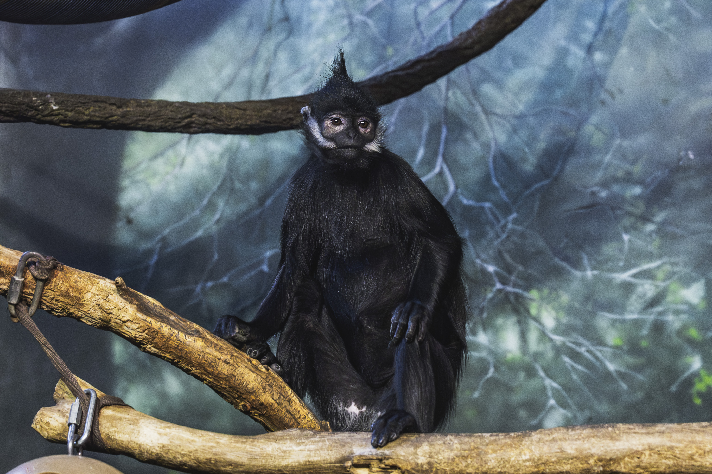
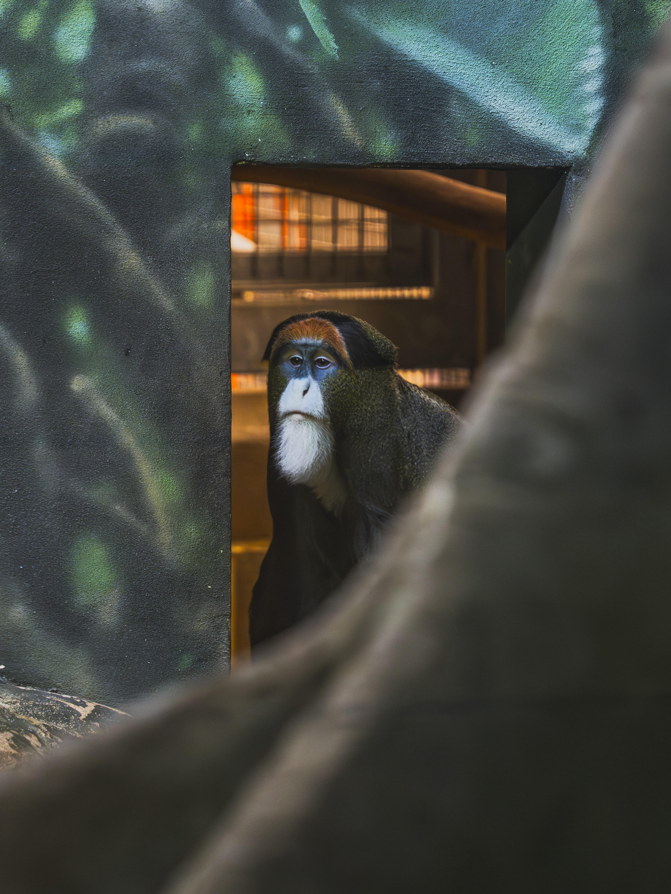
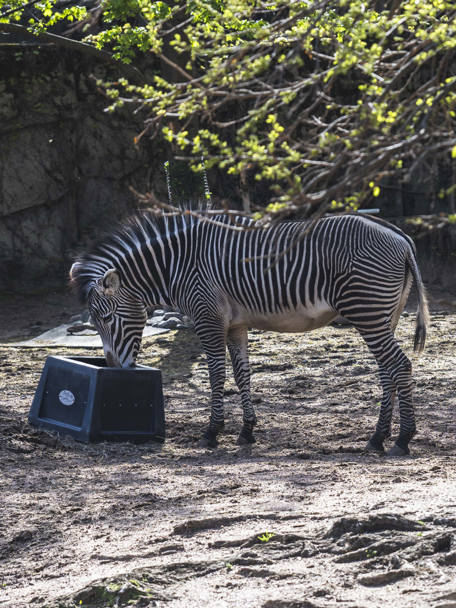
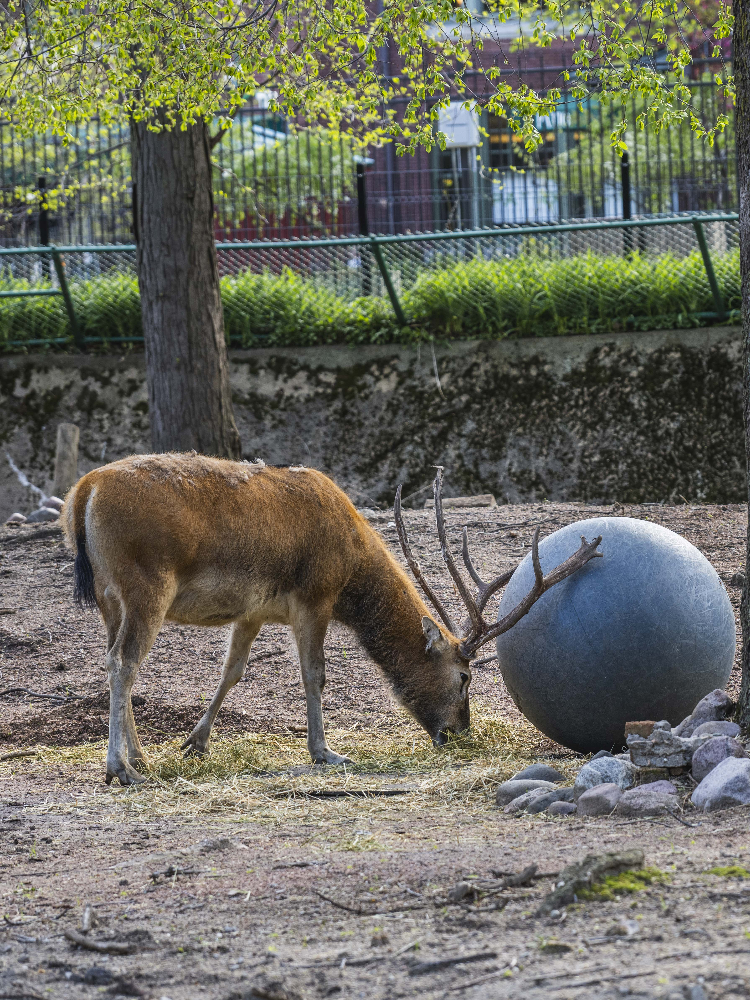

芝加哥居然有这么好逛的免费动物园。本来只是去 Lincoln Park 一带散步，路过 Lincoln Park Zoo，想着顺路进去看看，结果直接逛了大半天。
这里最让我意外的是动物的状态都比较好，而且种类比想象中丰富很多。进门不久就能看到狮子馆，隔着玻璃也能感受到它们的压迫感。海豹区也很适合停留，看它们在水里来回穿梭，比照片更有现场感。

芝加哥居然有这么好逛的免费动物园。本来只是去 Lincoln Park 一带散步，路过 Lincoln Park Zoo，想着顺路进去看看，结果直接逛了大半天。
这里最让我意外的是动物的状态都比较好，而且种类比想象中丰富很多。进门不久就能看到狮子馆，隔着玻璃也能感受到它们的压迫感。海豹区也很适合停留，看它们在水里来回穿梭，比照片更有现场感。



猴子区尤其值得看。室内展区里有大眼睛的黑夜猴，也会看到长臂猿在半空中荡来荡去。除此之外，还有黑猩猩、大猩猩等不同种类的灵长类动物。拍这类题材时，我更喜欢等它们停下来的一瞬间：一个眼神、一个侧脸，或者手搭在栏杆上的姿势，都会比快速连拍更有记忆点。
园区里还能看到斑马、麋鹿、棕熊、北极熊以及犀牛等大型动物。不同展区的距离不算夸张，适合一边走一边拍。它不是那种需要做很重攻略的动物园，更像是城市里一个可以自然走进去的地方。



而且最离谱的是，这里免费。在美国这种规模和位置的动物园还能免费开放，真的很难得。整体环境也很好，绿化做得很多，路线并不压迫，很适合天气好的时候慢慢逛，拍照也十分出片。
如果来芝加哥旅游，或者平时不知道去哪放空，我很推荐这里。它不只是一个“看动物”的地方，也很适合练习动物肖像、观察光线、寻找背景，以及用动物世界的方式打开一段城市里的下午。


